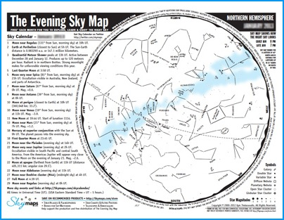

If you take an astronomy class, I hope you’ll develop a new lifelong habit - looking up!
If the sky is clear tonight, it’s worth taking a look. Even if faint things like the Milky Way aren’t visible from where you are, it’s almost always possible to see the Moon (if it’s in the sky), the brightest stars, and the brighter planets (depending on which ones are visible when you look). Here’s a nice, straightforward sky map, from skymaps.com (click on the map for a download link):

If you’d like to do some more `virtual exploration’ of the universe, there are a lot of great websites and programs out there, many of them free!
A great one is the program Stellarium. It is a great `sky simulator’, which you can use to look at the sky from any location on Earth (or even from other planets in our solar system), on virtually any date. It has a nice interface, it’s available on Mac, PC, and Linux, and it’s free.
There used to be another free program called Celestia. This was a `space simulator’, which you could use to fly around our solar system and the universe beyond. The programmer who wrote Celestia has moved on to making Cosmographia, available on the Mac App Store. If you’re on a student budget and are looking for free software, you might want to poke around the Celestia Motherlode site and see if there’s still a way to download Celestia (maybe via Sourceforge?)
There are so many other great programs and sites, it’s hard to know where to begin. Here are some things you might want to check out, some free, some not. (I’m not affiliated with any of the commercial software, but I’ve enjoyed using the ones listed below):
- The World Wide Telescope from Microsoft is a great tool for looking at the sky (and zooming in on objects in it) in your web browser.
- There are a number of sky maps and applets at the websites of Sky and Telescope and Astronomy magazines.
- Virtual Moon Atlas is a great free program for exploring the Moon in detail.
- While you’re exploring the Moon, you might also enjoy the spectacular zoomable mosaic of the nearside from Lunar Reconnaissance Orbiter. (Similar data exist for the farside, too!)
- You can’t miss out on images from the Hubble Space Telescope!
- Although most people automatically think of `the Hubble’ when they see a spectacular deep-sky image, there are some amazing images from other, often older instruments. The 48-inch Schmidt telescope (at Palomar Mountain, California) and the UK Schmidt (at Siding Spring Mountain, New South Wales) made all-sky surveys for many years. These images were digitized and are available online. You also owe it to yourself to check out the amazing color images that Davide de Martin has made from the Digitized Sky Survey data.
- Even if you don’t have a telescope, you can be an astrophotographer with just your computer! There’s so much downloadable data out there, it’s amazing. You can learn to take raw data and turn them into beautiful pictures yourself. Two good starting points are the free program FITS Liberator (for working on data such as you’d get from Hubble) and Emily Lakdawalla’s article on processing images from planetary spacecraft. (While you’re at it, Emily’s blog is always worth reading!)
- Of the commercial programs for the iPad, I’ve been really impressed with Sky Safari 3 Pro.
That’s just a sampling of what’s out there on the Web. Even if you’re stuck in a brightly-lit city, or under heavy clouds, or it’s a Full-Moon night, there is plenty of `virtual exploration’ you can do!
And when you get a chance, it’s well worth seeing the actual sky! Remember - keep looking up! If you want to see the sky more closely than you can with the unaided eye, and you live in the San Francisco Bay area, there are plenty of ways to do this! Some organizations you might want to check out include the San Jose Astronomical Association, the Fremont Peak Observatory Association, and the summer visitor programs at Lick Observatory. (Note: As of early 2014, Lick Observatory is slated to be closed by the UC system within a couple of years! You might be interested in the campaign to save Lick, and in the Friends of Lick Observatory organization.)